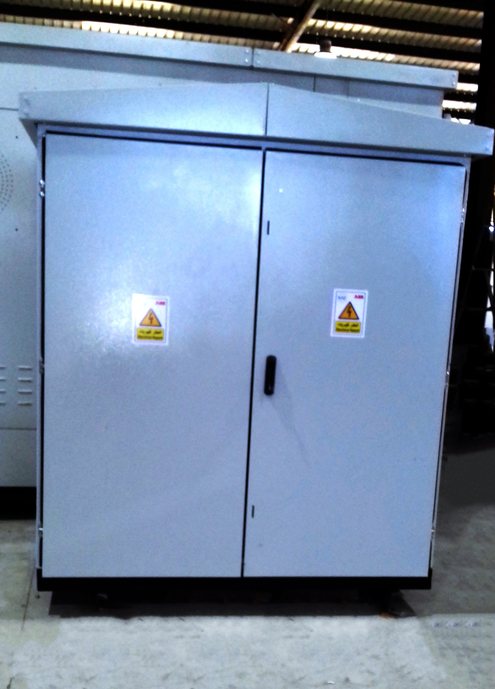

<div id="back">
  <div>
    <header>
      <h1 style="color:#0b5ed7; margin-top: 100px;">
        Air Insulated Medium voltage RMU 12KV,24KV.T
      </h1>
      <hr style="color: #0b5ed7  ; height: 2px; width: 68%; margin-left: 100px;"  >
    </header>
    <div  id="sl" >
      <swiper [config]="config">
        <div class="swiper-wrapper">
            <div class="swiper-slide">
              
                </div>
            <div class="swiper-slide">
                   
                </div>
                <div class="swiper-slide">
                   
                </div>
                <div class="swiper-slide">
                   
                </div>
            </div>
             <!-- Add Pagination -->
             <div class="swiper-pagination"></div>
             <!-- Add Arrows  -->
             <div class="swiper-button-next"></div>
            <div class="swiper-button-prev"></div>
        </swiper>
        <div class="container">
     <p> Rated Voltage:- 12KV or 24KV.
          Rated Current:- 630A.
          Short circuit current:- 25KA .
         It is a three phase medium voltage Ring main unit, the company manufactures,available for indoor&outdoor installation,
         is made of sheet steel.it is painted with a light grey electrostatic powder painting, the finish coat is grey color,
         It is designed,
         built and tested according to the IEC 62271-103, IEC 62271-105, IEC 60282-1& IEC 62271-102 & IEC 62271-202 & IEC 62271-200 standards.
  </p>
          </div>
    </div>
  </div>


</div>


